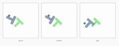
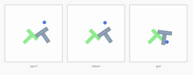
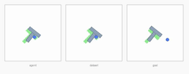
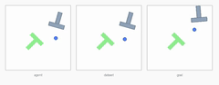

Reproducing the official LeWM (JEPA + SIGReg) PushT planning benchmark on Apple Silicon · June 3, 2026
Bottom line. Running the genuine le-wm/eval.py dataset-replay protocol
(50 episodes, seed 42, official CEM) against the released quentinll/lewm-pusht checkpoint
on an Apple-Silicon laptop (MPS, no CUDA) reproduces the paper's PushT result: 90% (45/50),
in line with the paper's 96.0 ± 2.83 and an independent reporter's 98%.
Getting there required one decisive fix — pin transformers<5 — without which the
checkpoint silently mis-loads and success collapses to 4%.
PushT success = the T-block reaches within 20 px and π/9 of the goal pose (the env's own
terminated signal), over 50 dataset-sampled start/goal pairs at eval seed 42.
| Run | Loader / env | Success | Eval wall-clock | Status |
|---|---|---|---|---|
| Paper | authors, CUDA | 96.0 ± 2.83 | — | reference |
| Reporter (YushenZuo, #62) | released ckpt, CUDA | 98 | — | independent |
| Ours — broken | transformers 5.9.0 | 4.0 (2/50) | 237 s | artifact |
| Ours — fixed | transformers 4.57.6 · MPS | 90.0 (45/50) | 123 s | reproduced |
Failures were episodes 14, 15, 23, 42, 48. The fixed run is faster than the broken one because successful episodes terminate early once the block reaches the goal.
Actual rollouts written by eval.py (lewm_data/pusht/env_*.mp4, re-encoded to GIF).
Each panel triplet shows current observation · replay · goal; the blue pusher drives the gray
T-block toward the green goal pose.




The paper's headline timing claim — "full planning completing in under one second" — measures one CEM
plan. We timed it directly with the official solver (pusht_timing_benchmark.py) and within the
full eval.
| Steady-state | ~2.04 s |
| Cold first plan | ~5.4 s |
| CEM config | 300 × 30, H=5 |
| Total wall-clock | 123 s |
| Batched plan (50 envs) | ~20–90 s |
| Device | Apple MPS |
~2× the paper's GPU number — expected for MPS vs. a datacenter GPU. Timing reproduced cleanly; it was never affected by the checkpoint-loading bug (same compute either way).
transformers < 5stable_pretraining.vit_hf builds a stock transformers.ViTModel. transformers 5.x
renamed the ViT attention parameters, so the rebuilt encoder no longer matches the released
weights.pt:
| transformers | ViT attention key | Result |
|---|---|---|
| 4.x (checkpoint era) | encoder.encoder.layer.N.attention.attention.query | matches weights |
| 5.x (installed by default) | encoder.layers.N.attention.q_proj | silent mismatch → 4% |
Neither stable-worldmodel nor stable-pretraining upper-bounds transformers
(>=4.50.0), so a fresh install floats to 5.x and breaks every released checkpoint. This is the
unresolved le-wm issue #68; our fix is filed
as #80.
hdf5 dataset format silently fails to register
unless hdf5plugin is installed (#76).cd lewm_env && pip install 'transformers==4.57.6' hdf5plugin # the two fixes
# real expert dataset: 43 GB decompressed (18,685 eps, 2.34M frames, 7-dim state, 224² pixels)
# from quentinll/lewm-pusht · symlinked into $STABLEWM_HOME
cd le-wm
STABLEWM_HOME=.../lewm_data SWM_DEVICE=mps PYTHONPATH=. \
python eval.py policy=pusht/lewm solver.device=mps +cache_dir=null eval.num_eval=50
# → {'success_rate': 90.0, ...} in ~123 s
Local eval.py patches: CUDA→device-aware (SWM_DEVICE); dataset
format="h5"→"hdf5" (registry name in this swm build). Model: LeWM JEPA, 18.0M params,
ViT-tiny encoder.
| Artifact | What it is |
|---|---|
pusht-baseline.html | This report |
pusht_report_assets/ep_*.gif | 4 reproduced episodes (3 success + 1 failure) |
lewm_data/pusht/env_0..49.mp4 | All 50 reproduced episode videos |
lewm_data/pusht/pusht_results.txt | Official metrics + evaluation_time |
le-wm/eval_fixed.log / eval_full.log | Fixed (90%) and broken (4%) run logs |
pusht_timing_benchmark.py | Planning-time harness (no dataset needed) |
le-wm/eval.py (patched) | Device-aware + hdf5 format |
lewm_data/pusht_expert_train.h5 | Symlink → 43 GB dataset on external scratch |
lewm_data/checkpoints/pusht/lewm/ | weights.pt+config.json symlinks for load_pretrained |
env: transformers==4.57.6, hdf5plugin | The dependency fixes |
| le-wm issue #80 | Upstream writeup of the fix |
pusht_timing_benchmark.py) uses the env's own reset
goal and measures planning time only; it is not a success-rate measurement.